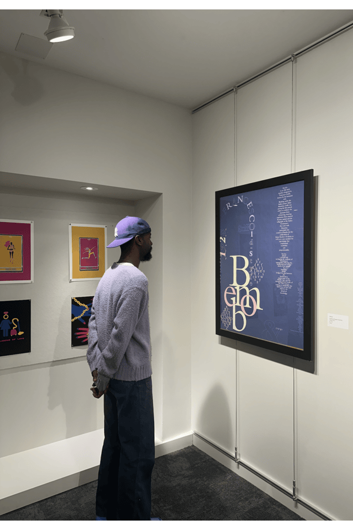
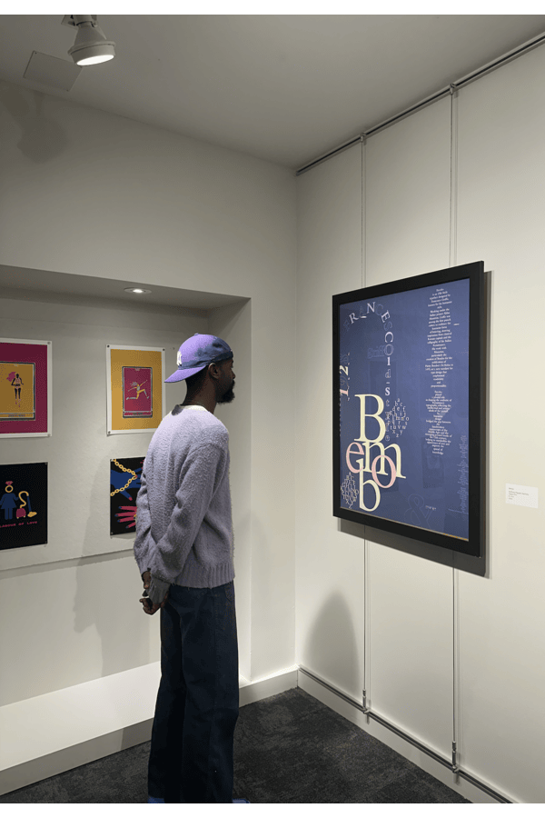

Bembo is a typographic history poster celebrating the classic serif typeface designed by Francesco Griffo in the late 15th century. Drawing inspiration from Griffo’s work in Hypnerotomachia Poliphili, the design highlights Bembo’s geometric elegance and delicate serifs, blending historical reverence with contemporary aesthetics. This poster was exhibited in the University of San Francisco Thacher Gallery.
Typographic Designer
Adobe InDesign, Color Theory, Typography, Composition, Historical Research